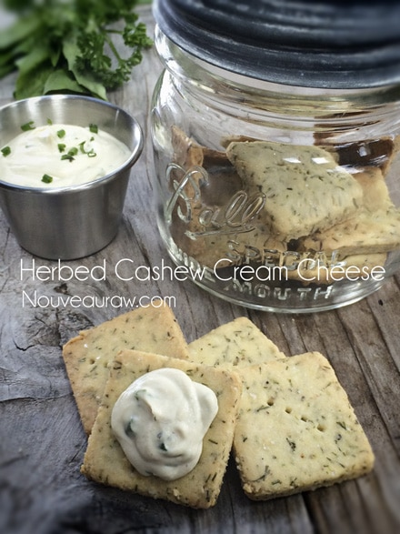
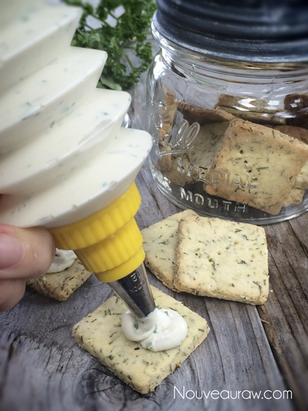
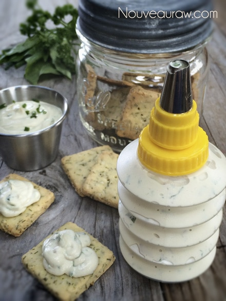
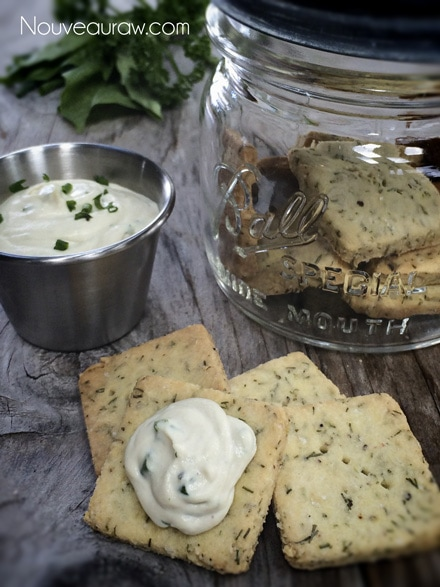

Herbed Cashew Cheese

~ raw, vegan, gluten-free ~
Have you ever wondered what the difference is between a herb and a spice? No? The thought never crossed your mind? I bet it has, you’re just too embarrassed to say. ;)
In simplest of terms… herbs are grown and used for their green parts, the leaves, and stalks. Often times, people end up using them dried for convenience but when used fresh, they can bring euphoric flavors and seductive aromas to a dish. By combining different herbs together, you can create many wonderful unique flavors.
Spices, on the other hand, are grown for the roots, bark, seeds, fruits and flowers. Spices are concentrated and have a powerful flavor profile which, when used properly, can electrify a dish and please the palate. However, there is such a thing as using too much which can overpower a dish and render it unrecognizable or unpalatable.
Feel free to use whatever fresh herbs you have in your kitchen or garden. The key is to mince them up nice and small… well mince and small pretty much mean the same thing… but you get the idea. Make them the perfect size that loves to get stuck in your teeth giving you some “green bling bling” throughout the day.
If you can, make this recipe up a day ahead of time. This will give the herbs time to meld together, developing a nice rich tasting cream cheese spread. The crackers in the photo are some baked gluten-free crackers that I made for my husband. The recipe isn’t on this site but do know that this “cheese” tastes amazing on just about any cracker.
Nutritional Data
Whole recipe ~ Calories 575 / Fat 42 g / Carb 29.4 g / Fiber 13.4 g / Protein 21.6 g
Per Tbsp ~ Calories 36 / Fat 2.6 g / Carb 1.8 g / Fiber 0.8 g / Protein 1.4 g
Ingredients:
yields 1 cup (16 Tbsp)
- 1 cup Cashew Cream Cheese base
- 1 Tbsp shallot, minced
- 1 Tbsp fresh chives, thinly sliced
- 2 Tbsp fresh parsley, chopped
- 1 Tbsp fresh basil, chopped
Preparation:
- Place the cashew cheese, shallots, chives, parsley and basil in a small bowl. Mix well.
- Store leftovers in the fridge for about 3-5 days.
SQUEEZE CHEESE!


